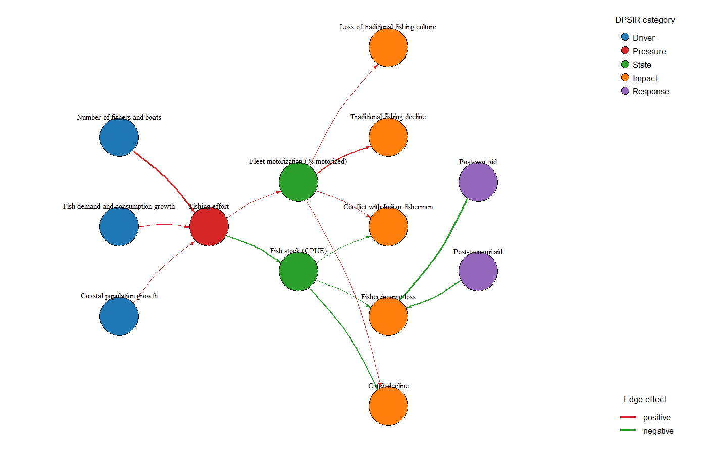
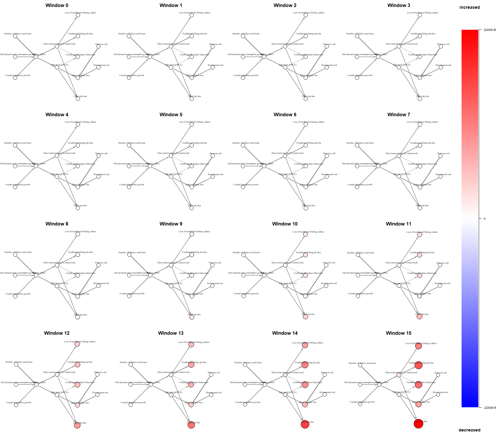

Running the app
Pick whichever of these matches what you're doing today — a one-off look, or ongoing work you'll want to keep and update.
Quick look, no setup
Runs the current main branch straight from
GitHub. Nothing is kept on disk after you close R.
shiny::runGitHub("iDPSIR", "gfonseca-unifesp", "main")
Keep a working copy
Clones the repo so you can update it later and it opens cleanly as an RStudio project.
git clone https://github.com/gfonseca-unifesp/iDPSIR.git cd iDPSIR
Then in RStudio: File → Open Project…, and run:
shiny::runApp()
install.packages() step needed. Both routes open a
browser tab with the app running locally — nothing is sent anywhere else.The wizard
Every project moves through six steps in order. Back and Next sit at the bottom of every step — Next is blocked with a short message if something's missing, so you can't accidentally skip ahead.
Start
Three ways in, pick one:
| Option | Use it when… |
|---|---|
| New project | You're starting from a blank network and will add nodes/edges by hand in the next steps. |
| Import matrices | You already have a nodes CSV (and optionally an edges CSV) matching the format below. |
| Load savepoint | You're resuming a project you saved earlier as a .idpsir.json file. |
Nodes CSV
One row per factor. id and
dpsir_category are the only columns that matter for the graph
to build — the rest can be left blank.
| Column | Value |
|---|---|
| id | Short unique code |
| label | Human-readable name |
| dpsir_category | Driver / Pressure / State / Impact / Response |
| subsystem | Optional grouping |
| uncertainty | low / medium / high |
| controllability | low / medium / high |
| self_regulation | Optional number in [0, 1), default 0 — only used by the optional temporal simulation (see Scenarios below) |
| growth_rate | Optional number, default 0 — a factor's own exogenous trend per time window, independent of any edge |
| reference_value | Optional number, default 1 — the scale a factor's change is measured against by an outgoing edge's threshold (see Edges below) |
id,label,dpsir_category,subsystem,uncertainty,controllability D1,Urban growth,Driver,Water,medium,low P1,Wastewater discharge,Pressure,Water,medium,low S1,Water quality decline,State,Water,medium,low
Edges CSV (optional)
from/to must match ids from the
nodes CSV above; the rest can be left blank.
| Column | Value |
|---|---|
| from / to | Node ids this link connects |
| weight | Strength (any positive number) |
| confidence | 0–1 |
| interaction_type | positive / negative |
| evidence_type | e.g. observational, monitoring |
| threshold | Optional, leave blank for most edges — only allowed when "from" is a State factor (see Scenarios below) |
| reference | Optional citation (DOI, URL, or plain text) backing this link |
from,to,weight,confidence,interaction_type,evidence_type D1,P1,3,0.8,positive,expert_assessment P1,S1,3,0.85,negative,monitoring
Model
This is the DPSIR schema — the five categories, the order they connect in, and how each is drawn. The default is what almost everyone should use as-is; it's shown here so the colors and shapes below make sense everywhere else in the app.
| Category | Order | Connects forward to | Role |
|---|---|---|---|
| Driver | 1 | Pressure | — |
| Pressure | 2 | State | — |
| State | 3 | Impact | — |
| Impact | 4 | Response | — |
| Response | 5 | Driver, Pressure, State, Impact | feedback |
Response is marked feedback: it's the only category allowed to connect back to earlier ones — the loop that makes a response actually change the system it responds to. "Advanced" options here let you swap the color palette or add extra levels, but most projects won't need them.
Nodes
Add opens a form for one node at a time; Edit selected and Remove selected work on the row you've picked in the table.
| Field | What it means |
|---|---|
| id | A short, unique code (e.g. P1) used everywhere else to refer to this node. |
| label | The human-readable name shown on the graph and in tables. |
| dpsir_category | Driver, Pressure, State, Impact or Response — sets the shape, color and position on the graph. |
| subsystem | Optional grouping (e.g. "Fisheries", "Water") — lets you filter the Graph tab down to one part of the network. |
| uncertainty | low / medium / high — how confident you are this node is described correctly. Thickens the node's border on the graph. |
| controllability | low / medium / high — how much a manager can influence this factor directly. |
| self_regulation | Optional number in [0, 1), default 0. The fraction of this factor's simulated deviation that reverts each time window (e.g. a recovering habitat) — only used by the Scenarios tab's optional temporal simulation, see the worked example. |
| growth_rate | Optional number, default 0. This factor's own exogenous trend per time window (e.g. population growth), independent of any edge — also only used by the temporal simulation. |
| reference_value | Optional number, default 1. The scale this factor's simulated change is measured against when one of its outgoing edges has a threshold set (Edges step). |
Edges
An edge is a directed link, from one node to
another — it has to follow the connection order from the Model step
(a Pressure→Impact edge, skipping State, will be flagged in Review).
| Field | What it means |
|---|---|
| weight | Strength of the link (any positive number). Drawn as line thickness on the graph. |
| confidence | 0–1, how sure you are this link is real. Below the Graph tab's threshold, the line is drawn dashed. |
| interaction_type | positive (the link increases its target) or negative (it decreases/mitigates it) — colors the edge red or green and appears in its tooltip. |
| evidence_type | e.g. observational, expert_assessment, monitoring — where the link comes from, shown on hover. |
| threshold | Optional — leave blank for most edges. Only allowed when "from" is a State factor: a fraction 0–1 of that factor's reference_value (Nodes step) it has to move, in a given scenario, before this edge switches on — instead of always contributing proportionally from the start. Only affects the Scenarios tab's optional temporal simulation; the sufficiency reading and the graph itself ignore it. |
| reference | Optional — a DOI, URL, or plain citation backing this specific link. Shown on hover and, if you check "Edge references" on the Report tab, listed in a References section so a reader can trace any prediction back to its evidence. |
Review and build
A summary ("6 nodes, 7 edges") plus a plain-language list of anything invalid — usually an edge that skips a category. Fix those, then press Build/Rebuild graph. This is also the button to press again any time you go back and edit nodes or edges — the Explore tabs always show the graph as of the last build, not your unsaved edits.
The Explore tabs
Once the graph is built, four tabs cover everything from the visual layout to a downloadable report. They all read the same built graph — nothing here edits your nodes or edges.
Graph
The main view: every node placed in a column by DPSIR category, with arrows showing the direction of each effect. Controls live in collapsible boxes down the left — click a section's title to expand it — while the graph and its legend take up the wider space on the right.
Switch between Layered by category (the default — each DPSIR category gets its own column) and Circular (every node equally spaced around a ring, ignoring category) — the circular option often reads better for a network built mostly around one feedback loop, where a layered layout forces the closing edge to arc all the way back across the diagram.
Dragging a node pins it exactly where you drop it — it stays there through filter changes and survives saving/reloading the savepoint. "Reset dragged positions" (below the graph) clears every manual placement at once and goes back to the automatic layout.
Turn either legend off if it's taking up space you'd rather give to the graph itself, e.g. before saving a snapshot for the report.
Switches all category colors at once — includes a colorblind-safe option.
Hide everything outside one subsystem or time horizon, to focus on a slice of a large network.
Size nodes by how many connections they have (total, incoming, or outgoing), optionally weighted by edge strength — the more central a factor, the bigger it appears.
Line thickness by weight or confidence; a slider sets how low confidence has to be before a link is drawn dashed instead of solid.
Horizontal/vertical spacing and overlap avoidance for legibility on dense networks, plus separate font sizes for labels and the legend.
Pick a start and end category (e.g. Driver → Response) and the app finds the strongest causal chains between them, ranked by score — pick one and everything else on the graph fades to grey.
Switch from coloring by DPSIR category (the default) to Community — a cluster of nodes more tightly connected to each other than to the rest of the network, often a sub-system acting together (say, everything tied to one fishery) even if it spans several DPSIR categories. Doing so reveals an algorithm dropdown (Louvain, Walktrap, Infomap, Label Propagation — they can disagree on the exact grouping, so it's worth comparing more than one) and redraws the graph with one color per community, edges included, plus a membership table below. Every filter and display setting above applies the same way in both coloring modes.
Click a node on the graph to select its row below, or vice versa — useful for finding a node's full detail without hunting across a busy layout.
Scenarios
Tests "what if we implemented this response, and how hard?" — without touching your saved network. Two independent "pushes" you build side by side: what's pushing the system to get worse, and how you're responding to it.
Optional. One row per Driver/Pressure node — turn on any combination you expect to worsen, and how strongly.
One row per Response node — turn on any combination you want to test, and how strongly each is implemented.
Lower values focus almost entirely on short, direct causal chains; higher values let longer, indirect chains contribute more. "Does it hold up across how far the effect is traced?" below shows whether your conclusions change across this range.
Runs both scenarios and shows "Is the response enough? (sufficiency)" — for each Impact, how much the pressure scenario worsens it, how much the response scenario mitigates (or, sometimes, worsens) it, whether that's enough to neutralize the worsening, and how strong the response would need to be if not. This reading is always well-defined — no stability requirement, no possibility of a silently inverted sign (see the worked example for why that mattered).
Every response in the network, evaluated alone at full strength against the same pressure scenario: the percentage of simulations — resampling every edge's weight within a range set by its confidence — in which that response alone neutralizes each Impact.
Recomputes the neutralization verdict at several settings of "How far to trace the effect" — an Impact marked Borderline has a verdict that changes somewhere in that range, worth a second look before trusting it at just one setting.
How many factors — and how many Impacts — the active response(s) can touch by following the network's links. Independent of the sufficiency reading above: it's a plain count of what's reachable, always available.
Runs the same two scenarios forward window by window instead of reading a single instant — useful when a response might, windows later, become a new pressure itself (see the worked example). Set the number of windows and whether each scenario is a one-time impulse or an ongoing/permanent push; a progress indicator shows "Window X of N" while it computes. Shows a table of how each Impact changes window by window, and a "storyboard" — one small graph per window, same layout throughout, node color/size showing how much that factor has moved from zero — downloadable as PNG or SVG and included as a figure if this scenario is added to the report.
Keeps the result for the rest of the session (not written to disk) so you can build several scenarios and compare them.
Pick two or more saved scenarios; shows "Reach per scenario" side by side, with the baseline (no response applied, reach always 0) as the reference row.
Metrics
Three sub-tabs, from the whole-network summary down to the DPSIR-specific view.
| Sub-tab | What's in it |
|---|---|
| General | Node/edge counts, density (how well-connected the network is overall), diameter, transitivity, modularity, and component count. |
| Centralities | Degree, betweenness, closeness, PageRank and eigenvector centrality per node — toggles for directed/undirected, normalized/raw and weighted, plus CSV/Excel export. |
| DPSIR descriptors | Node counts and edge transitions per category, a category × category matrix, flagged Impacts without a Response and Pressures not covered by a Response, and average uncertainty/controllability per category. |
Centrality scores answer "which factor matters most, and by what measure" — degree counts direct connections, betweenness flags factors that sit on the most causal paths between others, and PageRank weighs a factor by how important the things pointing at it are.
Report
Builds one self-contained HTML file you can email or archive — pick the sections, download, done.
Network graph image, general metrics, centralities, DPSIR descriptors, edge references, reproducibility info — check whichever apply. "Edge references" adds a References section listing every edge that has one (Edges step), so a reader can trace a prediction back to its evidence. "Reproducibility info" adds the R and package versions used to generate the report, plus the exact parameters behind the "how confident is that" figures (including the fixed random seed) — regenerating the report from the same savepoint reproduces the same numbers.
Any saved scenarios from the Scenarios tab — the baseline is added automatically once you pick at least one. "Include temporal simulation" adds each selected scenario's window-by-window table and storyboard to the report; off by default (it makes the file noticeably larger).
One file, openable in any browser, no other software needed.
Worked example: it works, but not forever — and not for everyone
Everything above is easier to follow with a real network in front of you. This one is adapted from a real paper — Gnanapragasam et al. 2026, Marine Policy, on artisanal fisheries in northern Sri Lanka — and walks through both readings: the static sufficiency check, and the optional temporal simulation that shows a response's own success quietly eroding over time, for reasons that have nothing to do with the response itself.
Download the example
A ready-to-load savepoint — no need to type anything in. On the wizard's Start step, choose Load savepoint and pick this file. It comes with the pressure and response scenario below already configured, ready for Apply scenario.
example_gnanapragasam.idpsir.json
The story
After the 2004 tsunami and, later, the end of a long civil war, aid programs replaced fishing boats and gear lost by coastal communities in northern Sri Lanka. The paper is explicit about what that aid was for: compensating fisher income loss — the human cost of a shrinking catch — not growing the fleet. This network takes that at face value: both aid programs (Response) link directly to Fisher income loss (Impact), the thing they were actually designed to fix — and to nothing else.
Everything else in the network is driven by the pressure side instead.
Fishing effort — pushed by population growth, demand growth, and the number
of fishers and boats (the latter given its own small standing
growth_rate, since the paper observes this trend without pinning
down a cause) — does two things: it depletes the fish stock (feeding catch
decline, income loss, and conflict with Indian fishermen), and it drives
fleet motorization directly, independent of any aid program. That growing
motorized fleet then compounds catch decline and conflict further, on top of
what the fish-stock route already causes, and separately accelerates the
decline of traditional (non-motorized) fishing and the culture built around
it. The result: the aid's own causal footprint and the pressure's causal
footprint don't overlap anywhere in this network.

| Link | Effect | Confidence |
|---|---|---|
| Population growth → Fishing effort | positive | 0.70 |
| Fish demand growth → Fishing effort | positive | 0.70 |
| Fishers/boats → Fishing effort | positive | 0.85 |
| Fishing effort → Fish stock | negative | 0.80 |
| Fishing effort → Fleet motorization | positive | 0.60 |
| Fish stock → Catch decline | negative | 0.75 |
| Fish stock → Fisher income loss | negative | 0.65 |
| Fish stock → Conflict with Indian fishermen | negative | 0.50 |
| Fleet motorization → Catch decline | positive | 0.50 |
| Fleet motorization → Conflict with Indian fishermen | positive | 0.50 |
| Fleet motorization → Traditional fishing decline | positive | 0.60 |
| Fleet motorization → Loss of traditional culture | positive | 0.50 |
| Aid (either program) → Fisher income loss | negative | 0.60 |
Both aid programs (post-tsunami and post-war) link to exactly one factor — Fisher income loss — with the post-war program weighted slightly stronger, reflecting it being the larger of the two efforts. Neither aid program has any other link, direct or indirect: everything else in the network (fishing effort, the fish stock, fleet motorization, and the four other Impacts) is completely outside what either program can reach, by construction.
Is the response enough?
The example savepoint already has this configured: a pressure scenario with Coastal population growth and Fish demand and consumption growth at 100%, and a response scenario with both Post-tsunami aid and Post-war aid at 100%. In Scenarios, leave "How far to trace the effect" at its default and click Apply scenario.
| Impact | Worsening | Mitigation | Net | Neutralizes? |
|---|---|---|---|---|
| Catch decline | 2.344 | 0.000 | 2.344 | No |
| Fisher income loss | 1.125 | -2.250 | -1.125 | Yes (x0.50) |
| Conflict with Indian fishermen | 1.313 | 0.000 | 1.313 | No |
| Traditional fishing decline | 1.125 | 0.000 | 1.125 | No |
| Loss of traditional culture | 0.844 | 0.000 | 0.844 | No |
Only one row has a non-zero Mitigation. Fisher income loss is the response's sole target, and at these strengths it more than covers the worsening (Net negative, Neutralizes: Yes, with half the combined strength already enough). Every other Impact reads Mitigation exactly 0.000, not because the response fails against them, but because it has no causal path to them at all — worsening carries straight through as Net, untouched. Compare the Worsening column to the earlier design of this same network (Catch decline 1.5, Conflict 0.75): both are noticeably higher now, because Fleet motorization gives the pressure scenario a second route into those two Impacts, on top of the Fish stock route that was already there.
How confident is that, response by response?
Evaluated alone at full strength against the same pressure scenario, neither aid program ever neutralizes Catch decline, Conflict with Indian fishermen, Traditional fishing decline or Loss of traditional culture in any of 300 simulations that resample edge weights within their confidence range — 0% for all four, consistent with the response having no path to any of them. Fisher income loss is the only Impact either program can touch at all, and they don't agree on how reliably:
| Response (alone, at 100%) | Neutralizes Fisher income loss |
|---|---|
| Post-tsunami aid | 20.7% of simulations |
| Post-war aid | 68.3% of simulations |
Post-war aid (the larger, more strongly-weighted program) is a substantially more reliable fix on its own than post-tsunami aid — worth knowing before assuming either program alone is "the" solution. "Does it hold up across how far the effect is traced?" agrees with the combined-scenario reading above: Fisher income loss reads Yes from c=0.2 up to c=0.65, then Borderline at c=0.8 — solid across most of the range, but not unconditionally. Every other Impact reads No at every setting, for the same structural reason as above.
Reach
This is where the redesigned network reads most starkly: 1 factor reached, including 1 of 5 Impacts. Not "reached weakly" or "reached indirectly" — reached, full stop, and only that one. No combination of strength or "how far to trace the effect" can ever make either aid program touch Catch decline, Conflict with Indian fishermen, Traditional fishing decline, or Loss of traditional culture, because there is no edge, direct or indirect, from either Response node into anything but Fisher income loss. That's not a limitation of the analysis; it's the network telling you, precisely and quantitatively, what this response can and cannot possibly influence, independent of magnitude — a response can be perfectly targeted and still leave 80% of a system's problems completely unaddressed, simply because nothing connects it to them.
Temporal simulation: does "Yes" last?
The sufficiency reading above is a single instant — everything happening at once, and by that reading, Fisher income loss is a clean success. Open Show temporal simulation across discrete time windows. This time, also check the pressure box for Number of fishers and boats at around 30% — representing that independent growth trend actually happening, in parallel, alongside population and demand — set Pressure scenario to Ongoing (permanent) and Response scenario to One-time (impulse) (the aid is a single delivery, not a recurring program), and push the windows slider to its maximum, 15.
| Impact | Window 5 (baseline / scenario) | Window 10 (baseline / scenario) | Window 15 (baseline / scenario) |
|---|---|---|---|
| Fisher income loss | 52.3 / 34.3 | 1,611.1 / 1,570.6 | 8,212.9 / 8,150.0 |
| Catch decline | 96.8 / 96.8 | 3,865.3 / 3,865.3 | 22,010.0 / 22,010.0 |
| Conflict with Indian fishermen | 62.9 / 62.9 | 2,228.8 / 2,228.8 | 12,858.2 / 12,858.2 |
| Traditional fishing decline | 56.0 / 56.0 | 2,309.5 / 2,309.5 | 14,765.8 / 14,765.8 |
| Loss of traditional culture | 42.0 / 42.0 | 1,732.1 / 1,732.1 | 11,074.4 / 11,074.4 |
One row tells a different story than the other four (values are abstract model units, not real catch/income figures — what matters is the shape and the comparison, not the raw size). Fisher income loss starts strong — at window 5 the aid cuts it by about a third (34.3 against a baseline of 52.3) — but the gap steadily narrows: by window 15 the scenario is within 1% of the baseline. The aid never reverses and never actually makes income loss worse; it simply has a fixed, one-time effect against a driver (the growing fleet) that keeps compounding every window, so its relative contribution fades toward irrelevance without ever crossing back to "worse than doing nothing." The other four — Catch decline, Conflict with Indian fishermen, Traditional fishing decline, and Loss of traditional culture — are all identical between baseline and scenario, at every single window, and they all grow (Traditional fishing decline and Loss of traditional culture used to have a zero baseline in the network's earlier design, when the aid still had a side channel into fleet motorization; now that channel is gone, they're driven by the same pressure trend as everything else, so they're never zero once fishing effort starts moving fleet motorization). The storyboard below plots exactly this: four nodes reddening in lockstep, and one node — Fisher income loss — visibly lagging behind them.

A threshold worth knowing about
The Fish stock → Catch decline edge has a
threshold set: 0.15 of the stock's reference_value
(100 in this network) — so that particular route into catch decline only
starts responding once the simulated stock loss passes 15 points, instead of
scaling from the very first unit of decline. That's a real fisheries
phenomenon (a collapse threshold). It only gates the Fish stock route,
though — the Fleet motorization route into Catch decline has no threshold, so
in the table above Catch decline is already moving by window 4, faster than
it would if the fish-stock route were carrying the whole effect alone.
Saving and resuming
Save savepoint (.idpsir.json) sits at the bottom of every step of the wizard — one file holding your schema, nodes, edges and layout. Reload it later from the Start step's Load savepoint option to pick up exactly where you left off. Scenarios you've saved during a session are not included yet — they live only until you close the app.
Quick glossary
- Driver
- An underlying human activity or need, e.g. urban growth, tourism, agriculture.
- Pressure
- What that activity puts on the environment, e.g. wastewater discharge, overfishing.
- State
- The resulting condition of the environment, e.g. water quality, fish stock levels.
- Impact
- The consequence of that state, e.g. biodiversity loss, public health risk.
- Response
- A policy or management action addressing any earlier stage in the chain.
- Density
- How many of the possible connections in the network actually exist — higher means a more tightly linked system.
- Centrality
- A family of scores for "how important is this node," measured in different ways (see Metrics above).
- Community
- A cluster of nodes more connected to each other than to the rest of the network.
- Sufficiency
- Whether a response scenario's mitigation on an Impact is enough to neutralize a pressure scenario's worsening — the primary Scenarios reading, always well-defined regardless of the network's structure.
- Neutralized
- An Impact's net effect (worsening + mitigation) is zero or negative — the response fully covers the pressure's worsening on that Impact. A positive net, even a small one, means "No."
- Temporal simulation
- An optional reading that runs a scenario forward window by window (discrete time steps) instead of reading a single instant — useful for seeing whether a response's benefit holds up or erodes over time.
- Self-regulation
- A factor's tendency to return to its own baseline on its own, once nothing is pushing it — e.g. a habitat that recovers. Only affects the optional temporal simulation, not the main sufficiency reading.
- Reach
- How many factors — and how many Impacts — a response's influence can touch by following the network's links, independent of both the sufficiency and temporal readings.